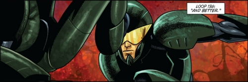

As I have already mentioned in the review of the manga adaptation of this title, Japanese light novels often follow the path: novel > manga > anime. It is, however, far less common for them to get adapted into a western-style graphic novel. All You Need Is Kill is an exception however, as it has been recently made into a major Hollywood film.
The story of both the film, and the novel the film is based on, revolves around the exploits of the main protagonist, Keiji Kiriya, a young recruit of the United Defense Force, an international task force established to deal with the threat of Mimics - marauding alien organisms, which invaded the Earth and now pose the grave threat to the very existence of humanity.
Keiji is killed by the aliens on his very first sortie, but then by means of some strange phenomenon wakes up in his bed, having returned to the day before the battle. This scenario repeats over and over again, until Keiji realises that somehow, he has been caught in an endless time loop, where his death and resurrection repeat time and time again.
After the initial stages of denial and desperation, Keiji realises that he retains all his memories from the past loops, which means that he can actually use this accursed time loop to his advantage. With each death, he learns a bit more about the strengths and weaknesses of his enemies, until, after having gone through well over 100 time loops, he is ready to face the invaders as an equal opponent.
To coincide with the release of the film Edge of Tomorrow, All You Need Is Kill - the official graphic novel adaptation of Hiroshi Sakurazaka’s science fiction story, written by Nick Mamatas with art supplied by Lee Ferguson, was released on Viz Media's Haikasoru imprint.
Haikasoru, according to the publisher, is the first imprint dedicated to bringing Japanese science fiction to America and beyond. Containing only a small, elite list of award-winners, classics, and new works by the hottest young writers, Haikasoru aims to bring to the western reader the uniqueness of the best speculative fiction from Japan.
While I am all for bringing anime and manga genres to the western audience, I am not that sure about the adaptation of Japanese works to a westernised comic book form. If you ask me, it's a bit like repainting Mona Lisa as a Disney-style cartoon. Sure, it will still be recognisable as Mona Lisa, but, in the process, wouldn't the painting lose all what makes it interesting and unique?
I fully understand that All You Need Is Kill - the graphic novel is not a remake of the manga adaptation, but rather an alternative (western) interpretation of the Hiroshi Sakurazaka’s novel, but in my humble opinion, as far as bringing the uniqueness of the Japanese science fiction to the western reader goes, the faithful translation of the original manga adaptation would do much better job.
And, having just finished reading the graphic novel, I cannot help but start comparing the latter to Takeshi Obata’s superb manga rendition. And the graphic novel doesn’t come out very well from this comparison.

To sum up my reservations in a few words, the storyline is slightly changed (and Keiji’s part in it shortened, or rather sped up), the illustrations are average, the storyboards are lazy, the characters are uninspiring and the Mimics look even more ridiculous than in the manga version.
If you suffer from some unexplained mango-phobia, read this graphic novel. Otherwise, give it a miss and get the much more superior manga adaptation.